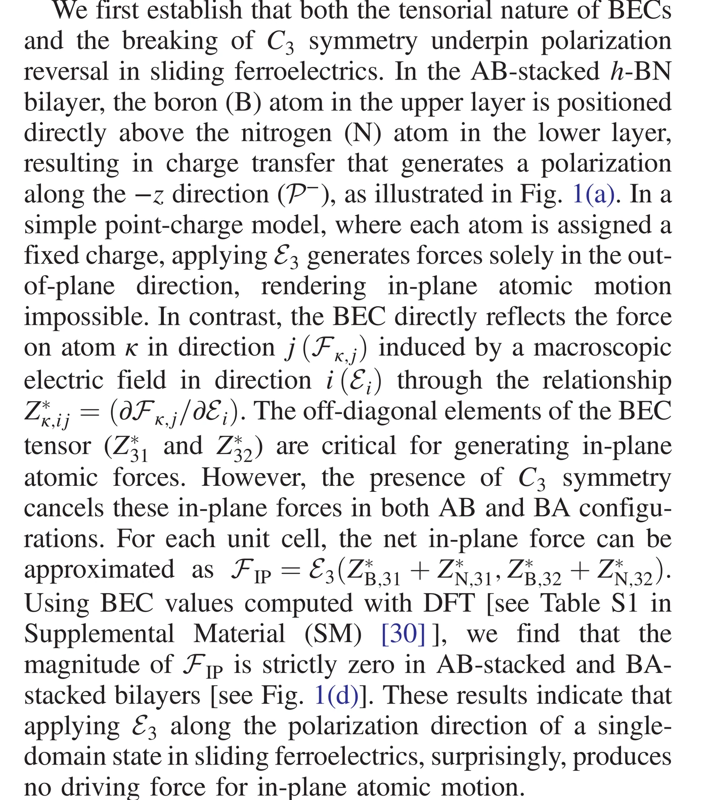
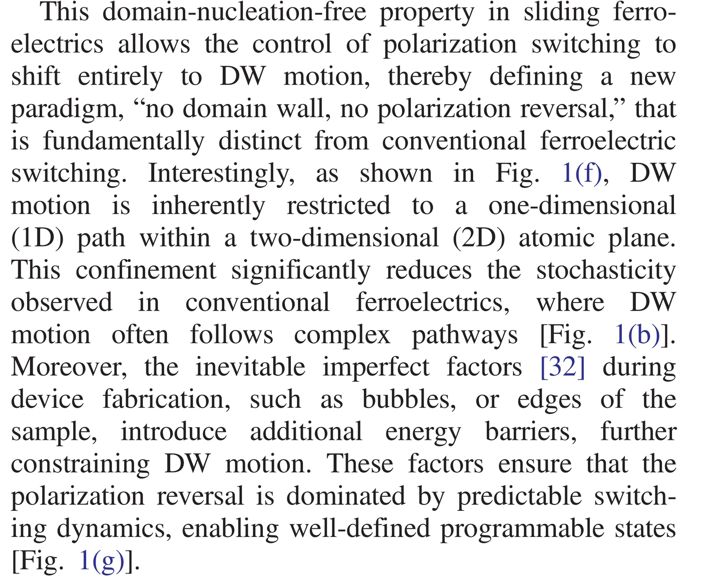
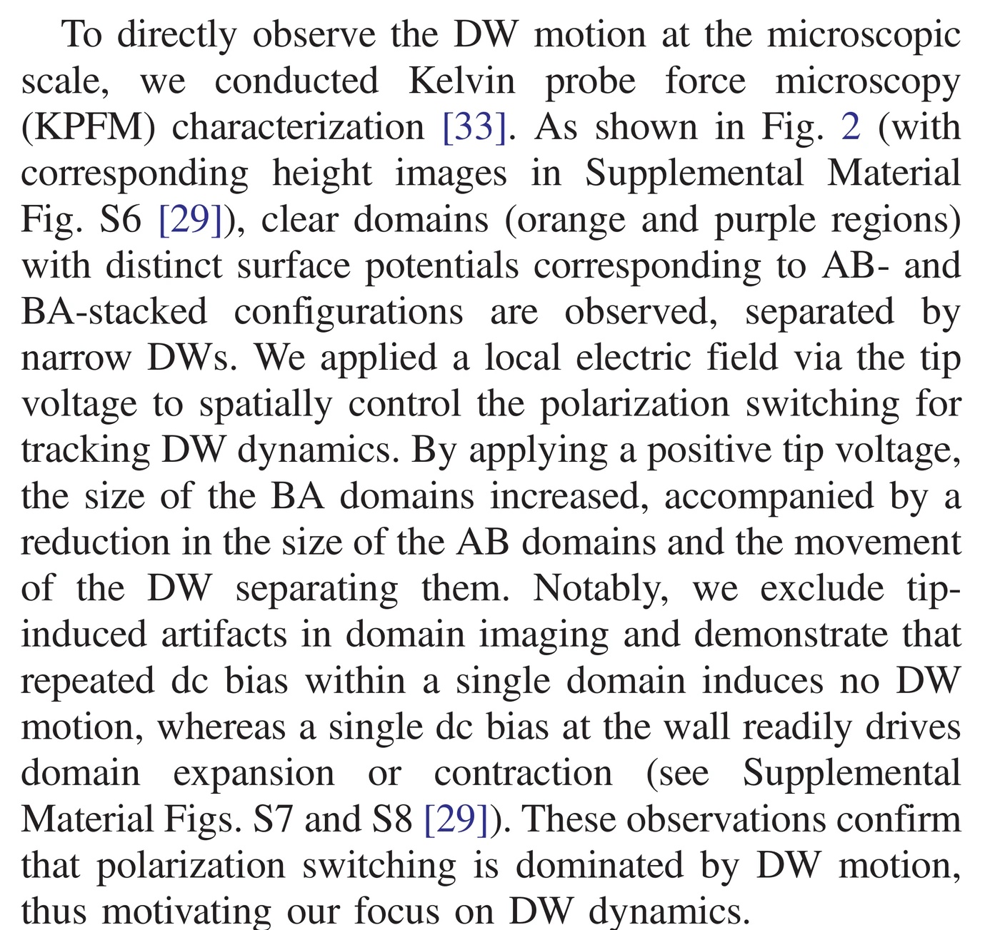
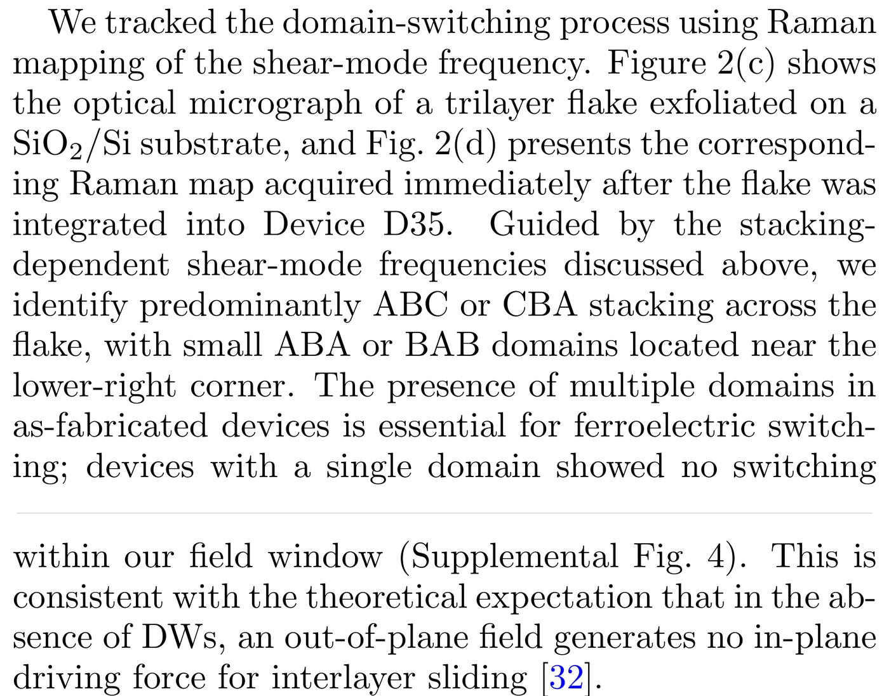
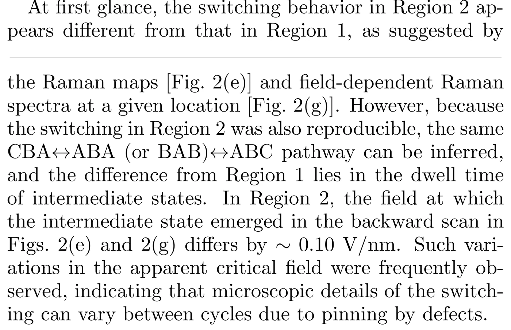

真正动的，到底是谁？
AB → BA 的示意图很容易让人脑补成“两整层一起横着滑”。真正需要追问的不是能量面上有没有一条低势垒路径，而是：一个沿 z 方向的电场，凭什么在 x–y 平面启动这次运动？
原文处理规则：这里不再摘“金句”。原文至少保留作者完整的一段论述，并直接使用 PDF 段落截图。所有图先把整页以 600 DPI 渲染，再裁完整 figure，必要时继续裁 panel；裁完以后再逐张检查 panel label、坐标轴、color bar 和相邻正文是否被误切。
1. 先拆掉一个常见误解：低 sliding barrier，不等于面外场能把整层推起来
势能面计算通常是人为选一条面内位移坐标，然后问 AB 沿这条坐标走到 BA 要付出多少能量。它回答的是“沿这条路走贵不贵”，却没有自动给出驱动力。Ke、Liu 与 Liu 2025 把这个缺口直接落到 Born effective charge（BEC）张量和局域对称性上。

作者先把“面外电场 → 面内运动”写成张量响应问题：非对角 BEC 在原则上可以把 Ez 转成 Fx/y。但理想 AB、BA 单畴保持 C₃，对称性让面内分量彼此抵消，所以稳定单畴处的净面内力严格为零。这里卡住的是启动运动的对称性条件，不是 barrier 高低。

看 (d) 时先找三个极化稳定点：箭头在高对称位置消失，而偏离这些位置后才出现明显的面内力场。图和上面的完整段落是同一条论证，不是两份独立证据。
2. Domain wall 不是两种颜色之间的“边界线”，而是一条局域失去高对称性的结构带
如果 AB 与 BA 中间存在一条连续的 stacking 过渡区，墙内原子的局域环境不再等同于完整单畴。正是在这条区域里，原本被 C₃ 消掉的非对角响应可以留下净值。Chen 等 2026 把“传统铁电”和“sliding ferroelectricity”的差别压在同一张 Fig. 1 里。

它再次确认稳定 AB/BA stacking 本身没有净面内启动力。这里最好把它与 Ke 2025 Fig. 1(d) 对照着看：两篇工作的核心力学图景是一致的。
引入已有 DW 以后，Fy 集中在墙附近，而 domain interior 基本不受这类面内驱动力。也就是说，同一个外场并不是均匀地“推整层”。
所谓 1D pathway 指的是墙在二维层内沿一个受 stacking 几何约束的方向传播；不是说材料本身变成一维。

单独一句会把作者后半段丢掉。完整段落其实连着说了三件事：切换自由度转移到已有 DW；DW 传播受到 1D 路径约束；bubble、edge 等真实缺陷又会给这条路径加额外 barrier。最后这一点正好把故事接到 pinning，而不是停在一句口号上。
3. 更有说服力的不是“看到墙移动”，而是同样的局域偏压打在不同位置，结果不一样
Chen 2026 的 KPFM 对照很关键：作者不是只拍到前后两张 domain 图，而是比较了 dc bias 加在完整 domain 内部和加在已有 DW 上的结果。这个空间选择性直接对应前面的 symmetry argument。

重复 dc bias 打在完整单畴里，没有触发 DW motion；而一次 bias 打在墙上就能让 domain expansion / contraction。前面的理论说“外场能抓住的是墙附近的局域结构”，这里给出了空间上的实验对应。

左列是 bubble，右列是 rough edge。不要只看墙“有没有动”，而要看墙在局域障碍处弯曲、停滞，外场提高后再越过障碍。这里已经能自然说 pinning / depinning from a defect；但还不能直接把它等同于临界现象意义上的 depinning transition。
4. Liu 2026 把这件事从局域 KPFM 推到器件尺度：墙、intermediate state 和 pinning 都能在 Raman map 里留下结构信息
这篇 PRL 的价值不只是“又看到 switching”。Shear-mode Raman 直接对 stacking 敏感，因此可以在同一块 3R-MoS₂ 里追踪不同区域沿什么路径变换。最值得和前面连起来的是两个观察：单畴器件在实验场窗内不切换；不同区域 intermediate state 的驻留时间和 apparent critical field 又会因为缺陷 pinning 而变化。


它不是直接“证明”所有 sliding FE 都必须有 DW，但它与 Ke / Chen 的对称性图景相符：在他们的器件和场范围内，已有多畴结构与可观察 switching 同时出现，而单畴样品没有表现出对应切换。

Region 1 和 Region 2 可以走同一套 CBA ↔ ABA/BAB ↔ ABC 路径，但 intermediate state 的驻留时间不同；甚至同一区域不同循环里 apparent critical field 也会移动。作者把这种循环间变化明确联系到 defect pinning。也就是说，接下来研究 Ec 分布、pinning landscape、creep 或 depinning 并不是“硬把统计物理套进材料”，而是实验本身已经把问题递了过来。
5. 学到这里，证据边界要卡住
现在已经相当有支撑的
至少在这些 hBN / 3R-MoS₂ 工作所研究的体系里，polarization reversal 可以由已有 DW 的传播主导；完整高对称 domain 与 DW region 对面外场的响应不同；bubble、rough edge、defect 等会改变墙的运动和 apparent switching field。
现在还不能直接说的
看到 pinning 和 threshold-like switching，并不等于已经证明了一个 universal depinning transition。要走到 universality，还需要定义稳健的临界场、测 v(E)、roughness、有限尺寸效应和 scaling collapse，并区分热激活 creep 与真正临界 depinning。
这一页的三篇主文献
BEC / C₃ / local force 的理论起点。DOI
把机制、KPFM 与器件控制接在一起。DOI
器件尺度 stacking imaging，把 intermediate states、region dependence 和 pinning 连起来。DOI